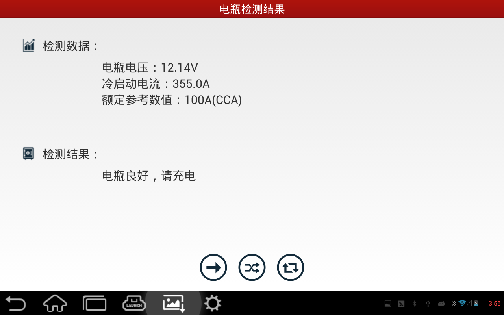
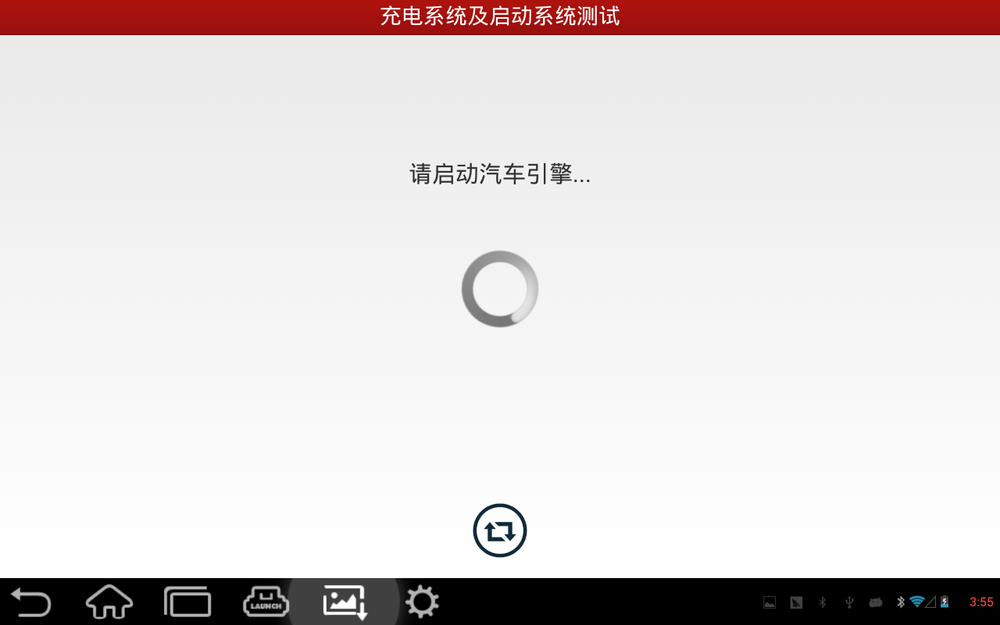

在车内测试环境下，又分为如下两种测试方法：
1、电瓶测试
车内的电瓶测试与车外的电瓶测试大体相同。但在车内测试环境下，开始测试前必须将车内的所有负载都关闭，否则测试得到的结果会有较大的误差。
开始测试时，首先要检测是否有浮电，如有则需开启大灯进行浮电的移除，移除后关闭大灯继续下一步的操作。
电瓶测试能为用户提供电瓶当前的状态、电压值及冷启动电流。
|  |
2、充电系统及启动系统测试
电瓶测试完毕，点击【下一步】按钮进入充电系统及启动系统测试。
充电系统及启动系统测试能够在发动机启动及加速的情况下测得电瓶的充电电压值和启动电压值，并且返回电瓶的充电状态和启动状态是否正常。
电瓶测试完成后可以不进行充电系统及启动系统测试，但在没有进行电瓶测试之前，不能对充电系统及启动系统进行测试。
|  |